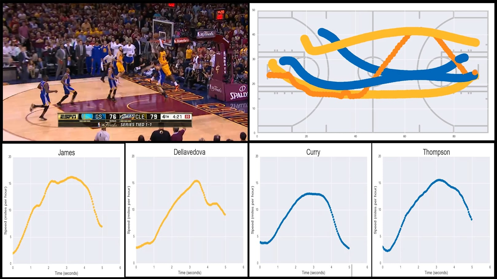

Basketball Motion Analysis
Grades 6 and 7, 60-90min
In the Basketball Motion Analysis lesson, students use decomposition to break down a specific LeBron James play from the 2015 NBA Finals. Students practice drawing and interpreting speed graphs, as well as discuss whether computers and data can replace human basketball coaches. This lesson was inspired by a post by Savvas Tjortjoglou.
Topics addressed
- Speed / motion graphs
- Basketball strategy
- Primary CT concept: decomposition. Students begin by watching television footage of the play, which is full of sounds, camera flashes, changing angles, hundreds of people, etc. We use decomposition to break down the play into something more manageable, removing most of the players and all of the other distractors to focus solely on the ball and the four most relevant players.
Students will be able to
- Define decomposition and give examples of breaking down difficult problems into smaller pieces
- Discuss how the NBA collects motion tracking data on players during games, and what that data is used for
- Interpret the general shape of speed graphs as they relate to someone moving in one dimension
- Create a speed graph to represent their observation of someone walking at varying speeds
- Debate the balance of computers and algorithms vs direct human observation and traditional coaching in basketball analysis
- Read specific values from a speed graph, including speed at specific times, maximum speeds and determining when a given speed is reached
Materials
-
Slides:


-
Student worksheet:


Prep
- Read about how the NBA tracks its players during games on Wikipedia here
Suggested lesson breakdown
- 5-10min – introduction to decomposition, examples outside of this lesson
- 15-20min – overview of how NBA tracks players and discussion of what that data can be used for
- 10min – introduction to speed graphs, full-class practice
- 10min – analysis of the play we’re analyzing
- 5-10min – interpreting speed graphs and discussing the answers to our questions
- 20min – individual practice on worksheet
Common Core standards
-
CCSS.Math.Content.5.G.A
Graph points on the coordinate plane to solve real-world and mathematical problems. -
CCSS.Math.Content.5.G.A.2
Represent real world and mathematical problems by graphing points in the first quadrant of the coordinate plane, and interpret coordinate values of points in the context of the situation. -
CCSS.Math.Content.6.EE.C.9
Use variables to represent two quantities in a real-world problem that change in relationship to one another; write an equation to express one quantity, thought of as the dependent variable, in terms of the other quantity, thought of as the independent variable. Analyze the relationship between the dependent and independent variables using graphs and tables, and relate these to the equation. For example, in a problem involving motion at constant speed, list and graph ordered pairs of distances and times, and write the equation d = 65t to represent the relationship between distance and time.